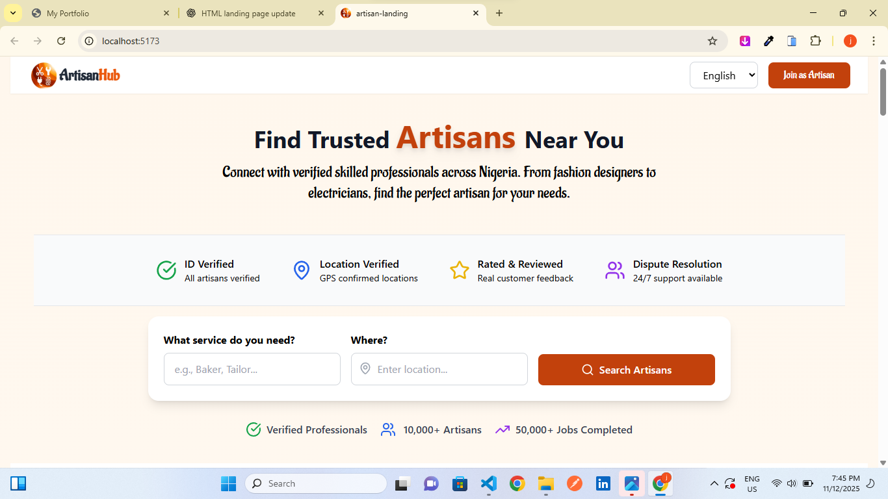

A React-powered platform bridging the gap between skilled local artisans and clients seeking quality handcrafted services — with location-based discovery, portfolio showcases, and a seamless booking flow.

ArtisanHub is a two-sided marketplace built entirely in React, solving a real problem in local creative economies: skilled artisans struggle to reach customers, and clients struggle to find quality local craftspeople they can trust.
The platform lets artisans create rich portfolio profiles showcasing their work, skills, and availability. Clients can search by location and craft category, browse portfolios, read reviews, and book sessions — all in a single, fluid experience. Built as a single-page application for a fast, app-like feel.
Local artisans — carpenters, seamstresses, potters, jewellers — have no reliable digital home. Social media is too noisy and generic, while building individual websites is too expensive. Clients searching for these services waste time on unreliable referrals. There was a clear gap for a purpose-built local marketplace.
I built a component-driven React SPA where artisans register and build portfolio profiles (images, bio, services, rates, location). Clients get a filterable discovery feed. React Router handles multi-view navigation without page reloads, keeping the experience fast. State is managed via React hooks, keeping the codebase lean and predictable.
Search and filter artisans by city or region, making it easy to find skilled crafts people nearby.
Rich profile pages with portfolio galleries, service descriptions, pricing, and availability calendars.
Clients can request bookings directly through the platform with date and service selection.
React Router-powered navigation for instant, page-reload-free transitions between all views.
Filter artisans by craft category, location, rating, and price range to find the perfect match fast.
Mobile-first layout ensuring artisans and clients have a great experience on any device.
ArtisanHub is live on Vercel and demonstrates how React's component model scales gracefully for marketplace UIs. The project sharpened my skills in state management, routing architecture, and designing systems that serve two distinct user types simultaneously.
Personal portfolio with smooth contact forms, email delivery, and social platform integrations.